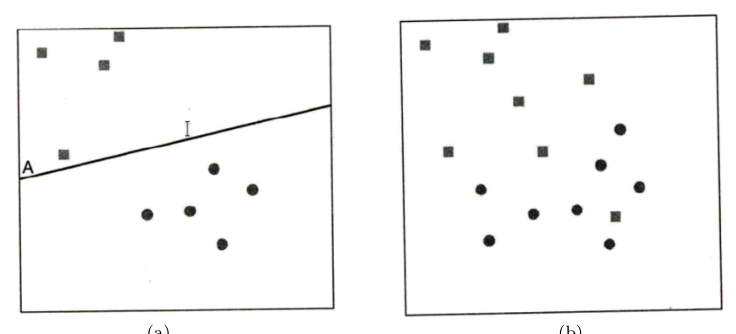
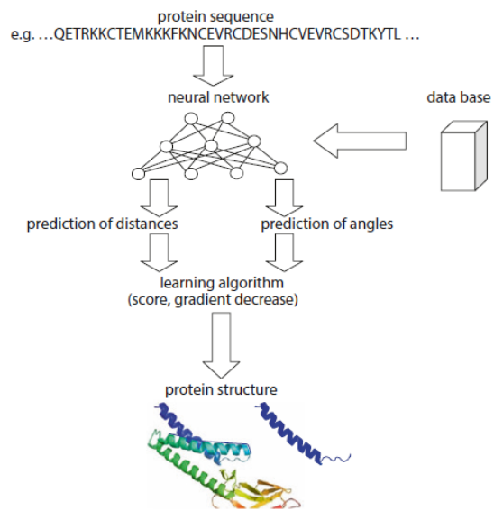
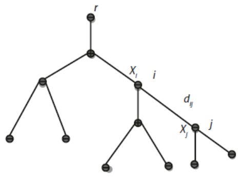

Chương 9 — Giới hạn và khả năng giải của học máy
Chương 9
Giới Hạn và Tính Giải Được của
Học Máy
Chương này giải thích các nguyên lý toán học của học máy. Nền tảng là lý thuyết học thống kê trong đó lý thuyết xác suất Bayes được sử dụng. Các thuật toán học của mạng nơ-ron được xây dựng bằng các phương pháp Bayes. Giới hạn hiệu năng của chúng (ví dụ: nhận dạng mẫu) phụ thuộc vào các phương pháp toán học tuyến tính hoặc phi tuyến tính được giả định. Một số ví dụ ứng dụng trong khoa học sự sống được thảo luận. Hiệu năng đáng kinh ngạc của lý thuyết học thống kê ngày nay dựa trên năng lực tính toán và lưu trữ kỹ thuật cũng như thực tế khổng lồ. Các tiêu chuẩn kỹ thuật này cũng giải thích sự thành công của các chatbot với mô hình ngôn ngữ lớn (LLM) và các mạng nơ-ron rất lớn. Câu hỏi đặt ra là liệu các hệ thống trí tuệ nhân tạo (AI) có thể nhận ra các mối quan hệ nhân quả chứ không chỉ các tương quan thống kê hay không và ở mức độ nào. Cuối cùng, người ta chỉ ra rằng các mạng nơ-ron rất lớn có thể được hình thức hóa về mặt toán học và phân loại như các hệ thống động lực học phức tạp. Do đó, khả năng giải thích và tính khả toán của chúng một lần nữa phụ thuộc vào chủ nghĩa hình thức toán học được giả định.
Suy Luận Quy Nạp của Khoa Học Thực Nghiệm: Từ Dữ Liệu đến Giả Thuyết
Các phương pháp của học máy hiện đại bắt nguồn sâu sắc từ phương pháp luận của các khoa học thực nghiệm. Phương pháp luận của Newton, được mô tả trong sách giáo khoa Principia Mathematica Philosophiae Naturalis của ông là regulae philosophandi (các quy tắc triết học hóa), đã ảnh hưởng đến nhiều thế kỷ của vật lý học. Nó được lặp lại gần như nguyên văn bởi
149
150 Trí Tuệ Nhân Tạo của Các Hệ Thống Mô Phỏng Thần Kinh
Einstein và những người khác trong thế kỷ 20: Một nhà khoa học tự nhiên bắt đầu bằng các quan sát và đo lường, và nhận ra các tương quan trong những dữ liệu hữu hạn này. Chúng được khái quát hóa thành giả định về một định luật hoặc một lý thuyết gồm nhiều định luật. Về mặt toán học, chúng thường có dạng các phương trình, chẳng hạn như các phương trình chuyển động và lực trong cơ học Newton. Trong triết học khoa học, các giả định về định luật như vậy được gọi là giả thuyết. Một lý thuyết thực nghiệm khi đó là một hệ thống các giả thuyết. Newton gọi con đường từ dữ liệu đến giả thuyết hoặc lý thuyết là “quy nạp” (Mittelstrass, 1995).
Từ những lý thuyết và giả thuyết như vậy, các dự đoán cho các sự kiện quá khứ và hiện tại hoặc các lời giải thích cho các sự kiện tương lai có thể được suy diễn một cách logic-toán học đối với các điều kiện ban đầu và điều kiện phụ phù hợp. Một ví dụ là mô hình hành tinh của Kepler, được suy diễn từ các định luật cơ học của Newton. Trên cơ sở mô hình này, các dự đoán về vị trí hành tinh trong tương lai có thể được suy diễn. Chúng ta giả sử rằng một phát biểu A (ở đây là các định luật hành tinh của Kepler với vị trí ban đầu đã biết của một hành tinh) kéo theo một phát biểu B (ở đây là dự đoán về vị trí tương lai của hành tinh). Tính đúng đắn của phép kéo theo này được chứng minh bằng cách tính phương trình chuyển động của hành tinh sau khi đưa vị trí ban đầu của nó vào. Bây giờ, phát biểu A, tức là mô hình hành tinh của Kepler và vị trí ban đầu của hành tinh, được giả sử là đúng. Khi đó, phát biểu B, tức là dự đoán về vị trí tương lai của hành tinh, cũng mang tính tất yếu logic. Nếu kết luận “Nếu A, thì B” là đúng và phát biểu A là đúng, thì với tính tất yếu logic, phát biểu B là đúng.
Nhưng bây giờ hãy giả sử rằng kết luận “Nếu A, thì B” là đúng và phát biểu B (ví dụ: một quan sát về vị trí hành tinh) là đúng. Chúng ta biết gì về định luật hoặc mô hình được giả định? Nói chung, phát biểu A không đúng như một sự tất yếu logic. Sau nhiều lần quan sát lặp đi lặp lại, theo đó các kết luận logic B từ A là đúng, người ta tối đa chỉ có thể giả định rằng mô hình hoặc giả thuyết A được giả định của chúng ta là hợp lý. Rõ ràng, đây không chỉ là tình huống trong các khoa học thực nghiệm như vật lý, hóa học và sinh học mà còn trong các khoa học xã hội và kinh tế. Chỉ có toán học mới quan tâm đến các suy diễn logic-toán học từ các hệ tiên đề hoặc hệ giả thuyết được giả định.
Giới Hạn và Tính Giải Được của Học Máy 151
Do đó, các khoa học thực nghiệm tập trung vào các câu hỏi sau: Làm thế nào để chúng ta tìm thấy các mô hình phù hợp cho các lời giải thích và dự báo trong các tập dữ liệu? Những mô hình như vậy hợp lý đến mức nào? Độ tin cậy của chúng thay đổi như thế nào với các quan sát mới và kiến thức nền tảng mới? Chúng ta có thể học được gì từ những kinh nghiệm mới? Với lượng dữ liệu khổng lồ mà chẳng hạn như sinh học phân tử và kinh tế học phải xử lý, rõ ràng là những câu hỏi này chỉ có thể được trả lời trong khuôn khổ toán học của thống kê và lý thuyết xác suất.
Định Lý Bayes
Theo nhà toán học và thần học người Anh Thomas Bayes (1702–1762), việc học có thể được giải thích bằng xác suất có điều kiện của các sự kiện (Mainzer và Schröder-Heister, 1995). Trong bối cảnh này, xác suất không được định nghĩa là xác suất (xác suất khách quan), mà là một mức độ tin cậy (xác suất chủ quan): Một sự kiện A được giả định trước khi xảy ra một sự kiện B với xác suất tiên nghiệm P(A), nhưng sau khi xảy ra B với xác suất hậu nghiệm (có điều kiện) P(A|B).
Với sự trợ giúp của định lý Bayes, các xác suất có điều kiện có thể được tính toán: Xác suất có điều kiện P(A|B) của sự kiện A sau khi xảy ra sự kiện B được cho bởi thương số của xác suất P(A ∩B) (tức là xác suất để các sự kiện A và B xảy ra cùng nhau) và xác suất P(B) của sự kiện B, tức là
P(A|B) = P(A ∩B)
P(B) ,
P (A∩B)
P (A) · P(A)
P(B) = P(B|A) · P(A)
P(B) .
Do đó, định lý Bayes phát biểu rằng P(A|B) = P (B|A)·P (A)
P (B) , tức là xác suất của A sau khi xảy ra B được tính từ xác suất có điều kiện của B với điều kiện A và các xác suất tiên nghiệm P(A) và P(B) đã cho.
152 Trí Tuệ Nhân Tạo của Các Hệ Thống Mô Phỏng Thần Kinh
Suy Luận Quy Nạp và Phương Pháp Xác Suất Bayes
Làm thế nào các phương pháp Bayes có thể được áp dụng cho suy luận quy nạp trong khoa học tự nhiên? Làm thế nào một mô hình M có thể được suy ra từ một tập dữ liệu D? Từ định lý Bayes, suy ra rằng đối với xác suất của một mô hình M khi biết tập dữ liệu D,
P(M|D) = P(D|M) · P(M)
P(D) = P(M)P(D|M)
P(D) .
Xác suất tiên nghiệm P(M) ước lượng xác suất mô hình M đúng trước khi (tiếng Latin: a priori) có dữ liệu. Xác suất hậu nghiệm P(M ∨D) tính đến ước lượng xác suất mô hình M đúng sau khi (tiếng Latin: a posteriori) dữ liệu của tập dữ liệu D đã được quan sát. Xác suất P(D|M) để các quan sát của tập dữ liệu D xảy ra dưới giả định của mô hình M được gọi là độ hợp lý (likelihood) của dữ liệu dưới giả định của một mô hình. Xác suất P(D) đại diện cho bằng chứng dữ liệu của tập dữ liệu D. Để tính xác suất của một mô hình M dưới giả định của một tập dữ liệu, việc tính các logarit tương ứng thường đơn giản hơn:
log P(M|D) = log P(D|M) + log P(M) −log P(D).
Trong đánh giá Bayes đối với các mô hình, giả định về xác suất “tiên nghiệm” đôi khi bị chỉ trích là chủ quan hoặc tùy tiện. Tuy nhiên, trong thực tế, tác động của các xác suất tiên nghiệm giảm dần khi số lượng dữ liệu tăng lên. Trong phép tính logarit của độ hợp lý, logP(D|M) thường tăng tuyến tính theo số lượng dữ liệu từ D, trong khi biểu thức tiên nghiệm logP(M) vẫn giữ nguyên. Hơn nữa, cách tiếp cận Bayes đòi hỏi sự phân biệt rõ ràng giữa các giả định tiên nghiệm và hậu nghiệm. Xác suất tiên nghiệm của một mô hình phụ thuộc vào phân phối xác suất được giả định. Tùy thuộc vào ứng dụng, ví dụ: phân phối Gauss hoặc Dirichlet phù hợp cho việc này. Trong mọi trường hợp, không có nguyên tắc khách quan chung nào được biết đến để xác định các giả định tiên nghiệm trong mọi tình huống (Skilling và Sibisi, 1996).
Giới Hạn và Tính Giải Được của Học Máy 153
Phương Pháp Xác Suất Bayes và Mô Hình Hóa Thực Nghiệm
Mô hình M(w) phụ thuộc vào tham số w. Trong một mô hình vật lý về chuyển pha mô tả sự chuyển đổi từ, ví dụ, trạng thái lỏng sang trạng thái khí ở các giá trị nhiệt độ tới hạn, nhiệt độ là một ví dụ về tham số. Ngược lại với những mô hình vật lý đơn giản như vậy, các mô hình sinh học phân tử phụ thuộc vào một số lượng tham số khổng lồ. Để đánh giá mức độ tốt của một mô hình M(w) đối với một tập dữ liệu D như một trình tự sinh học phân tử, các hàm sai số và sai lệch f(w, D) ≥0 được áp dụng để tính toán mức độ mà mô hình khớp với tập dữ liệu như một hàm của các tham số mô hình. Có thể chứng minh rằng việc cực tiểu hóa hàm sai số tương đương với cực đại hóa độ hợp lý (likelihood) của dữ liệu (Baldi và Brunak, 2001; Jeffreys và Berger, 1992).
Hai mô hình M1 và M2 có thể được so sánh bằng cách so sánh xác suất P(M1|D) của chúng cho một tập dữ liệu D (ví dụ: trình tự axit amin). Một mục tiêu có thể là xác định mô hình M tốt nhất của một lớp mô hình bằng cách tìm tập tham số w có độ hợp lý cực đại P(M|D). Cách tiếp cận Bayes có ưu điểm về mặt phương pháp luận là nó ưu tiên các mô hình ít phức tạp hơn. Điều này tương ứng với phương châm của dao cạo Occam, theo đó lời giải thích cho một quan sát đưa ra ít giả định lý thuyết hơn nên được ưu tiên [32]. Hóa ra là độ hợp lý (likelihood) của dữ liệu đối với các tập dữ liệu đã cho trở nên nhỏ hơn về mặt trung bình khi P(D|M) liên quan đến một không gian dữ liệu đang phát triển. Do đó, các mô hình phức tạp có xu hướng hướng tới một độ hợp lý (likelihood) nhỏ hơn của dữ liệu quan sát được.
Theo định lý Bayes, để xác định xác suất P(M|D) của một mô hình khi biết tập dữ liệu D, trước tiên cần đánh giá độ hợp lý (likelihood) của dữ liệu P(D|M) của một mô hình và xác suất tiên nghiệm P(M) của nó. Đối với một chuỗi bit gồm các bit 0 và 1, mô hình đơn giản của một đồng xu công bằng, có hai mặt hiển thị các chữ số 0 hoặc 1, có thể được chọn. Mô hình này chỉ có một tham số duy nhất p. Dữ liệu bao gồm các chuỗi trên bảng chữ cái A = {0, 1}, được tạo ra bởi các lần tung đồng xu ngẫu nhiên.
154 Trí Tuệ Nhân Tạo của Các Hệ Thống Mô Phỏng Thần Kinh
Dữ liệu D của một trình tự DNA được hình thành trên bảng chữ cái A = {A, C, G, T}. Một mô hình ngẫu nhiên đơn giản sẽ là một con xúc xắc bốn mặt mà các mặt mang các ký hiệu A, C, G và T (Baldi, tr. 68).
Triết lý khoa học Bayes giải thích về mặt thống kê cách các mô hình và giả thuyết của chúng ta về thế giới thay đổi thông qua những kinh nghiệm mới và cách chúng ta có thể học hỏi từ kinh nghiệm. Do đó, nó có thể được hiểu như một lý thuyết khung cho các thuật toán học tự động hóa các quy trình học trong học máy. Trong học máy, các mạng nơ-ron được mô hình hóa theo bộ não con người đóng một vai trò thống trị. Bước đột phá của nghiên cứu AI trong thực tế phần lớn liên quan đến khả năng của mạng nơ-ron trong việc áp dụng lượng dữ liệu lớn (Dữ liệu lớn / Big Data), ví dụ: trong nhận dạng mẫu với các thuật toán học hiệu quả. Các ứng dụng thực tế đòi hỏi hàng nghìn nơ-ron và khớp thần kinh trong các mạng nơ-ron nhiều lớp (học sâu) được huấn luyện thống kê với các tập dữ liệu hữu hạn gồm đầu vào và đầu ra.
Từ Suy Luận Bayes đến Mạng Nơ-ron
Theo quan điểm Bayes, mạng nơ-ron có thể được hiểu là các mô hình đồ thị M(w) với các tham số w nhất định. Những mô hình này gợi nhớ đến bộ não con người. Trong các mạng nơ-ron truyền thẳng (feedforward) cổ điển, các nơ-ron được sắp xếp thành các lớp như các nút của một đồ thị. Trong Hình 1, mỗi nơ-ron của một lớp được kết nối với tất cả các nơ-ron của lớp tiếp theo bằng các cạnh có hướng (khớp thần kinh), nhưng các nơ-ron trong cùng một lớp không kết nối với nhau. Ngoại lệ là lớp đầu vào, nơi các nơ-ron không có kết nối đi vào, và lớp đầu ra, nơi các nơ-ron không có kết nối đi ra. Các lớp nằm giữa lớp đầu vào và lớp đầu ra được gọi là “ẩn”. Mỗi kết nối/cạnh được gán trọng số trong mô hình đồ thị của mạng nơ-ron bằng một con số tương ứng với cường độ của kết nối khớp thần kinh. Các trọng số này là các tham số w của mô hình đồ thị M(w) của một mạng nơ-ron. Mỗi nơ-ron được đặc trưng bởi một hàm kích hoạt xác định quan hệ đầu vào–đầu ra cho nơ-ron này. Tương tự như bộ não, một nơ-ron được cho là “bắn” (fire) hoặc bị kích thích khi tổng các đầu vào có trọng số của các tế bào lân cận vượt qua một ngưỡng nhất định (Mainzer, 2019, Chương 7).
Giới Hạn và Tính Giải Được của Học Máy 155
Lớp đầu ra
Lớp 3
Lớp 2
Lớp 1
Lớp đầu vào
Hình 1. Một mạng truyền thẳng với ba lớp ẩn, một lớp đầu vào và một lớp đầu ra (Mainzer, 2022, tr. 35).
Về mặt toán học, các mạng này có thể được định nghĩa là các hàm ν: In →Om ánh xạ một không gian đầu vào n chiều In(n > 0) sang một không gian đầu ra m chiều Om(m > 0). Ví dụ, một mạng như vậy có thể tính toán phép xấp xỉ của một hàm f: Rn →R với I = O = R. Ví dụ, một mạng phân loại hình ảnh 8-bit có kích thước h×v (với h ngang và v dọc) thành hai lớp có thể được định nghĩa bởi một hàm ν: Ih·v →O với miền đầu vào I = {0, . . . , 255} cho 28 = 256 hình ảnh 8-bit có thể có và miền đầu ra O = {0, 1} cho hai lớp được ký hiệu là 0 và 1. Ánh xạ bắt đầu với một đầu vào từ In, đầu tiên được đưa vào lớp đầu vào trong mạng và sau đó được xử lý tiếp qua các lớp trung gian ẩn đến lớp đầu ra. Từng lớp một, các tổ hợp tuyến tính của các giá trị của các nút (nơ-ron) và trọng số (kết nối khớp thần kinh) từ các lớp trước đó được tính toán. Các hàm kích hoạt cho các nơ-ron tiếp theo được áp dụng cho các kết quả này (Hình 2). Về mặt đồ thị, các hàm kích hoạt kích hoạt trạng thái “bắn” của một nơ-ron.
Các mạng được phân biệt bởi các hàm kích hoạt khác nhau. Hàm ngưỡng của một nơ-ron McCulloch–Pitts chỉ có giá trị hàm
156 Trí Tuệ Nhân Tạo của Các Hệ Thống Mô Phỏng Thần Kinh
Đầu vào Trọng số Tổ hợp tuyến tính Hàm kích hoạt
Σ
⋮ ⋮
Hình 2. Các hàm kích hoạt của nơ-ron trong mạng nơ-ron (Mainzer, 2022, tr. 36).
(a) (b) (c) (d)
Hình 3. Các ví dụ về hàm kích hoạt (Mainzer, 2022, tr. 36).
bằng 1 cho các đầu vào v ≥0, nếu không thì bằng 0 (Hình 3(a)). Một hàm tuyến tính từng khúc ánh xạ tuyến tính một khoảng bị chặn và các khoảng ngoài là hằng số (Hình 3(b)). Các hàm sigmoid có độ tăng biến thiên được thể hiện ở độ cong của đồ thị (Hình 3(c)). Một hàm chỉnh lưu (ReLU = đơn vị tuyến tính chỉnh lưu) nhận các giá trị dương của các đối số của nó, nếu không thì bằng 0 (Hình 3(d)).
Suy Luận Bayes và Các Thuật Toán Học
Điểm cốt lõi ở đây là mạng nơ-ron có thể học từ các ví dụ. Theo quan điểm Bayes, điều này không gì khác hơn là ước lượng sự phù hợp của một mô hình M(w) để giải thích (khớp) một tập dữ liệu D và ước lượng các tham số mô hình w. Tùy thuộc vào ứng dụng, một tập dữ liệu có thể được hiểu là một mẫu đầu vào–đầu ra D = (D1, . . . , DK) gồm các cặp Di = (di, zi), trong đó di đại diện cho dữ liệu tương ứng và zi đại diện cho trạng thái đích tương ứng.
Trong một tác vụ phân loại, chẳng hạn, nhiệm vụ có thể là chia dữ liệu của một tập dữ liệu thành các lớp nhất định làm trạng thái đích. Nếu một số lượng hữu hạn các trạng thái đích được chỉ định trong dữ liệu huấn luyện, chúng ta nói
Giới Hạn và Tính Giải Được của Học Máy 157
về học có giám sát. Ngược lại, đó là học không giám sát. Một hàm sai số được sử dụng để so sánh dữ liệu đầu ra với các trạng thái đích nhằm tối ưu hóa các tham số mô hình, tức là các trọng số của mạng nơ-ron. Theo quan điểm Bayes, đây là bài toán quy nạp cổ điển về cách thu được mô hình tốt nhất có thể từ dữ liệu.
Mạng Nơ-ron như một Phương Pháp Tính Toán Xấp Xỉ
Một tính chất đáng chú ý của mạng nơ-ron là chúng có thể xấp xỉ hầu hết mọi hàm (trơn) f(x) = y với độ chính xác tùy ý (Hornik et al., 1990). Ở đây, các đối số hàm x là đầu vào và giá trị hàm y là đầu ra của một mạng nơ-ron phù hợp. Thuật toán để xấp xỉ hàm f được hiện thực hóa từng bước qua các lớp của một kiến trúc mạng phù hợp. Lý thuyết khoa học Bayes có thể được sử dụng để chọn một hàm mục tiêu phù hợp và một hàm truyền cho đầu ra.
Giả sử dữ liệu một lần nữa được cho dưới dạng các cặp đầu vào–đầu ra độc lập Di = (di, zi). Dữ liệu này bị nhiễu theo nghĩa là các trạng thái đích zi khác nhau có thể được quan sát cho một điểm dữ liệu di nhất định. Bản thân các phép toán của mạng nơ-ron được giả định là tất định. Đối với xác suất của các cặp dữ liệu Di = (di, zi) dưới điều kiện của các trọng số khớp thần kinh w (như các giá trị tham số của mô hình nơ-ron M(w)), phép tính Bayes khi đó mang lại
P((di, zi)|w) = P(di|w)P(zi|di, w) = P(di)P(zi|di, w), trong đó đối với đẳng thức thứ hai, sự độc lập của các đầu vào d đối với các tham số w được giả định. Công thức logarit của phép tính Bayes sau đó có thể được sử dụng để tính xác suất của các tham số mô hình w (tức là các trọng số của một mạng nơ-ron) giả sử các cặp dữ liệu D:
log P(w|D) = log P(D|w) + log P(w) −log P(D)
K
log P((di, zi)|w) + log P(w) −log P(D)
= i=1
158 Trí Tuệ Nhân Tạo của Các Hệ Thống Mô Phỏng Thần Kinh
K
(log P(zi|di, w) + log P(di)) + log P(w) −log P(D)
= i=1
K
K
log P(zi|di, w) +
= log P(di)
i=1 i=1
+ log P(w) −log P(D), trong đó ở dòng thứ ba, P((di, zi)|w) = P(di)P(zi|di, w) đã được tính đến.
Trong phép tính trên, bằng chứng dữ liệu P(D) và P(di) có thể được bỏ qua vì các giá trị này không phụ thuộc vào các tham số w (tức là các trọng số khớp thần kinh của mạng nơ-ron). Trọng tâm là xác định xác suất tiên nghiệm P(w) và độ hợp lý (likelihood) của dữ liệu P(zi|di, w). Trong trường hợp độ hợp lý của dữ liệu, ý tưởng chỉ đạo là một mạng với các trọng số w đã cho sẽ tạo ra một đầu ra ước lượng y(di) cho một đầu vào di đã cho. Mô hình được xác định đầy đủ nếu có thể xác định được cách dữ liệu quan sát được zi = z(di) có thể sai lệch về mặt thống kê so với đầu ra yi = y(di).
Nhận Dạng Mẫu Tuyến Tính và Phi Tuyến Tính của Mạng Nơ-ron
Về mặt lịch sử khoa học, đáng lưu ý rằng sự phát triển của mạng nơ-ron gắn liền với một cuộc thảo luận gay gắt về các giới hạn của công nghệ này mà cuối cùng hóa ra chỉ là tạm thời. Thuật toán học của mô hình perceptron (1950) bắt đầu với một tập hợp trọng số ngẫu nhiên và sửa đổi các trọng số này, theo một hàm sai số, để cực tiểu hóa sự khác biệt giữa đầu ra hiện tại của một nơ-ron và đầu ra mong muốn của một mẫu dữ liệu đã huấn luyện (ví dụ: chuỗi chữ cái, hình ảnh điểm ảnh). Thuật toán học này chỉ có thể được huấn luyện để nhận dạng các mẫu như vậy (có giám sát) mà “tách biệt tuyến tính”. Trong trường hợp này, các mẫu phải có thể tách biệt bằng một đường thẳng.
Hình 4(a) cho thấy hai mẫu bao gồm các hình vuông nhỏ hoặc các hình tròn nhỏ làm phần tử. Cả hai mẫu đều có thể tách biệt bằng một đường thẳng
Giới Hạn và Tính Giải Được của Học Máy 159

(a) (b)
Hình 4. Các mẫu tách biệt tuyến tính (a) và phi tuyến tính (b) (Mainzer, 2022, tr. 39).
và do đó có thể nhận dạng được bởi một perceptron. Hình 4(b) cho thấy hai mẫu không thể tách biệt bằng một đường thẳng.
Minsky, một nhà nghiên cứu AI hàng đầu thời bấy giờ và là đại diện của mô hình “cũ” của AI biểu tượng, cùng với Papert đã chứng minh về mặt toán học vào năm 1969 rằng Perceptron sẽ thất bại nếu các mẫu chỉ được biểu diễn bằng các đường cong (“phi tuyến tính”) (Hình 4(b)) (Minsky và Papert, 1969). Với điều này, Minsky và Papert tin rằng đã bác bỏ về mặt toán học mô hình mới của mạng nơ-ron hoặc ít nhất là đã đặt nó vào những giới hạn rất hẹp.
Vì lý do này, chứng minh của Minsky và Papert ban đầu được cộng đồng AI coi là giới hạn cơ bản của mạng nơ-ron đối với nghiên cứu AI. Giải pháp cho vấn đề này được lấy cảm hứng từ kiến trúc của bộ não tự nhiên.
Tại sao việc xử lý thông tin chỉ nên chạy theo một chiều qua các lớp chồng lên nhau của các nơ-ron được nối mạng?
Vào năm 1986, Rummelhart, Hinton và Williams đã chứng minh rằng lan truyền ngược (backpropagation) giữa các lớp đầu vào, trung gian và đầu ra cũng cho phép phân loại phi tuyến tính với các thuật toán kích hoạt và học phù hợp (Rummelhart et al., 1986). Cuối cùng, Hornik, Stinchcome và White đã chứng minh vào năm 1989 rằng, dưới các điều kiện phù hợp, các kiến trúc truyền thẳng cũng có thể được sử dụng (Hornik et al., 1889).
160 Trí Tuệ Nhân Tạo của Các Hệ Thống Mô Phỏng Thần Kinh
Ví Dụ về Học Máy: Các Mô Hình Mạng Nơ-ron của Protein
Các mạng nơ-ron với những phần mở rộng này đã dẫn đến những bước đột phá lớn trong học máy và AI. Vài năm trước, Google đã phát triển phần mềm AlphaGo có mạng nơ-ron học từ kinh nghiệm chơi trong trò chơi cờ vây của châu Á và cuối cùng đã đánh bại các nhà vô địch con người. Tiếp nối thành công này, vào năm 2018, cùng công ty đó đã phát triển phần mềm có mạng nơ-ron thành công trong việc mô hình hóa protein với số lượng lớn nhất từ trước đến nay và trong thời gian ngắn nhất (Senior et al., 2020).
Phần mềm này, được gọi là AlphaFold, dựa trên một mạng nơ-ron nhiều lớp theo nghĩa của học sâu, có thể dự đoán các hình dạng và nếp gấp phù hợp của protein dựa trên các trình tự đầu vào của axit amin. Điều này được thực hiện bằng cách ước lượng khoảng cách và góc liên kết giữa các axit amin, mà phân phối của chúng được tính toán bởi các thuật toán học. Các xác suất này được tóm tắt trong một điểm số có thể được sử dụng để ước lượng mức độ chính xác của một cấu trúc protein được đề xuất. Việc huấn luyện một mạng nơ-ron dựa trên một cơ sở dữ liệu mở rộng. Hình 5 cho thấy kiến trúc của AlphaFold, nhận dạng cấu trúc protein phù hợp từ một trình tự protein của các mã axit amin. Thuật toán học nhận dạng cấu trúc protein phù hợp từ các phân phối xác suất của khoảng cách và góc có thể dựa trên phương pháp tính điểm hoặc phương pháp gradient. Các phương pháp gradient được biết đến từ nghiên cứu vật liệu khi các cấu trúc nhất định (như cột đá bazan) được tạo ra bằng cách làm nguội (hạ dần theo gradient) một vật liệu nóng (ví dụ: dung nham).
Cho đến nay, chỉ có khoảng một nửa số cấu trúc protein có thể có của tế bào người được giải mã. Điều được quan tâm trung tâm là những thay đổi do đột biến. Sự biến dạng của cấu trúc dẫn đến rối loạn chức năng như là nguyên nhân của bệnh tật. AlphaFold và các mạng nơ-ron học máy tương tự sẽ không thể thiếu đối với việc kiểm soát bệnh tật và chăm sóc sức khỏe vì sự đa dạng của sự sống dựa trên sự phức tạp của thế giới protein. Mã của chúng chỉ có thể được nắm bắt bằng học máy với sức mạnh tính toán của siêu máy tính. Về cơ bản, không gian tìm kiếm cho các dạng protein có thể có là theo hàm mũ và không bao giờ hoàn chỉnh, vì quá trình tiến hóa vẫn chưa kết thúc.
Giới Hạn và Tính Giải Được của Học Máy 161

Hình 5. Kiến trúc của AlphaFold (Mainzer, 2022, tr. 41).
Suy Luận Xác Suất và Mô Hình Hóa trong Thuyết Tiến Hóa
Các cấu trúc và chức năng phức tạp của gen, protein và tế bào mà chúng ta quan sát ngày nay là kết quả của một quá trình tiến hóa diễn ra trong nhiều triệu năm và không ngừng phát triển. Darwin đã có ý tưởng thiên tài rằng sự đa dạng quan sát được của các loài có thể được truy nguyên về tổ tiên chung mà các nhánh phát triển của chúng có thể được biểu diễn bằng các nhánh của một cái cây. Trong khi cái cây với các cành và nhánh của nó là một mô hình, thì “lá” của nó ở đầu các nhánh tương ứng với các loài quan sát được. Câu hỏi lớn là làm thế nào sự phát triển phát sinh loài này có thể được suy ra từ sự tiến hóa sinh học phân tử. Trong ngôn ngữ của tin sinh học, mục tiêu là suy ra cấu trúc cây phát sinh loài từ các trình tự DNA và protein. Các phương pháp học máy được sử dụng để xử lý lượng dữ liệu lớn bằng các thuật toán và máy tính mạnh mẽ.
162 Trí Tuệ Nhân Tạo của Các Hệ Thống Mô Phỏng Thần Kinh
Về mặt toán học, một cây T được hiểu là một đồ thị liên thông không chu trình (Hình 6). Trong một cây, hai nút luôn được kết nối với nhau bằng đúng một cạnh. Số lượng nút luôn lớn hơn số lượng cạnh đúng một đơn vị. Một cây được gọi là nhị phân nếu mỗi nút có một hoặc ba nút lân cận. Nút gốc đặc biệt của một cây được gọi là r. Người ta phân biệt giữa cây có gốc và cây không có gốc (không có nút gốc đặc biệt). Trong các cây phát sinh loài, nút gốc đại diện cho trình tự tổ tiên mà từ đó tất cả các trình tự khác của cây được suy ra hoặc có thể được suy ra. Các đặc trưng của cây là cấu trúc liên kết (topology) và chiều dài của các nhánh. Cấu trúc liên kết cho thấy mô hình phân nhánh và sự phân kỳ của quá trình tiến hóa. Chiều dài của các nhánh biểu thị khoảng thời gian giữa các sự kiện được đại diện bởi các trình tự tương ứng.
Như một mô hình xác suất đơn giản hóa của quá trình tiến hóa, một mô hình khối lập phương lại có thể được giả định. Theo đó, quá trình tiến hóa bắt đầu với trình tự của một tổ tiên và phát triển từng bước bằng cách thay thế các chữ cái một cách ngẫu nhiên và độc lập với vị trí. Trong Hình 6, r là gốc cây. Khoảng cách thời gian giữa các nút cây i và j được ký hiệu là dij ·Xi là chữ cái tại nút cây ẩn i. Các chữ cái quan sát được nằm ở các nút dưới cùng gọi là lá. Xác suất các chữ cái Xi được

Hình 6. Mô hình đồ thị của một cây phát sinh loài nhị phân (Mainzer, 2022, tr. 43).
Giới Hạn và Tính Giải Được của Học Máy 163
thay thế bằng các chữ cái Xj khi di chuyển từ nút i sang j được ký hiệu là pXjXi(dji) (Baldi và Brunak, 2001, tr. 267).
Một mô hình xác suất đơn giản cho quá trình tiến hóa đưa ra các giả định sau:
• Tại mỗi vị trí, chỉ có sự thay thế các chữ cái (tức là không có chèn và xóa). Tất cả các trình tự quan sát được đều có cùng độ dài. • Các phép thay thế tại mỗi vị trí là độc lập với nhau. • Xác suất thay thế chỉ phụ thuộc vào trạng thái hiện tại (hiện hành) chứ không phụ thuộc vào lịch sử tiến hóa trong quá khứ (điều kiện Markov). • Quá trình Markov là giống nhau cho tất cả các vị trí.
Nhược điểm của những giả định đơn giản hóa này là trong quá trình tiến hóa sinh học, không có một giả định nào được đáp ứng bởi DNA thực. Độ dài của các trình tự DNA có thể thay đổi do chèn và xóa. Hơn nữa, quá trình tiến hóa không độc lập với các vị trí khác nhau. Tốc độ thay đổi trong quá trình tiến hóa không đồng đều theo thời gian và đối với các vị trí. Ngoài ra, DNA có thể được tái tổ hợp. Tương ứng, các mô hình xác suất đơn giản hóa do đó chỉ có thể đóng vai trò là các phép xấp xỉ.
Ví dụ về một mô hình tiến hóa xác suất
Cho một tập hợp các trình tự và một mô hình tiến hóa xác suất, người ta có thể cố gắng xác định cấu trúc liên kết cây có xác suất cao nhất và chiều dài nhánh có xác suất cao nhất (Felsenstein, 1981). Giả sử K trình tự O1, . . . , OK có cùng độ dài N được cho trên một bảng chữ cái A. Trong mô hình cây T tương ứng, r ký hiệu gốc chung và dij ký hiệu khoảng cách giữa các nút lân cận i và j. Mục tiêu của lý thuyết khoa học Bayes là xác định xác suất P(T|O1, . . . , OK) của mô hình T khi biết các trình tự O1, . . . , OK. Theo định lý Bayes, một bước thiết yếu để đạt được mục đích này là tính toán độ hợp lý (likelihood) P(O1, . . . , OK|T) của các trình tự này đối với mô hình tiến hóa xác suất T. Do giả định độc lập của mô hình tiến hóa,
164 Trí Tuệ Nhân Tạo của Các Hệ Thống Mô Phỏng Thần Kinh xác suất này có thể được phân tích thành thừa số cho từng chữ cái riêng lẻ của các trình tự:
N
P(Ok
1, . . . , Ok K|T),
P(O1, . . . , OK|T) =
k=1 trong đó Ok j ký hiệu chữ cái thứ k được quan sát trong trình tự thứ j. Do đó, chỉ cần xem xét các xác suất P(Ok
1, . . . , Ok K|T) liên quan đến các chữ cái thứ k Ok j trong các trình tự tại K lá của cây. Tại mỗi nút cây i, một biến ngẫu nhiên ẩn χi có thể được giả định để chỉ ra chữ cái liên kết với nút i. Do đó, một cây phát sinh loài cũng có thể được hiểu là một mô hình nhân quả với cấu trúc cây, trong đó xác suất có điều kiện của nút j tại một nút cha i đã cho phụ thuộc vào khoảng cách thời gian dji:
P(χj = Y|χi = X) = pYX(dji).
Do đó, tất cả các thuật toán đã biết để tính toán các mô hình nhân quả đều có thể được áp dụng cho các mô hình cây phát sinh loài [42].
Viễn Cảnh của Học Máy trong Khoa Học Sự Sống
Việc tìm kiếm các cấu trúc cây tối ưu là một thách thức đòi hỏi tính toán chuyên sâu. Không gian tìm kiếm của tất cả các cây có thể có lớn theo hàm mũ, vì vậy việc tìm kiếm vét cạn là không thể. Do đó, chỉ có các quy trình heuristic. Điều này thường liên quan đến việc chọn một loài mới trong mỗi bước tiến hóa có tính đến tất cả các vị trí có thể có của nó trong cây hiện tại. Tuy nhiên, các mô hình tiến hóa xác suất không được quá đơn giản. Các mô hình Markov tỏ ra phi thực tế đối với các quá trình tiến hóa dài hạn vì chúng hội tụ về mặt toán học đến một phân phối cân bằng trong khoảng thời gian này. Tuy nhiên, trạng thái cân bằng trong tự nhiên mâu thuẫn với tất cả các kinh nghiệm trước đây. Sự cân bằng chỉ xảy ra tạm thời và cục bộ trong các hệ thống con. Do đó, hiển nhiên là cần kết hợp các mô hình tiến hóa cục bộ khác nhau. Điều này dẫn đến các hệ thống động lực học phi tuyến tính cao, có thể tương ứng tốt hơn với sự phức tạp sinh học, nhưng lại chạm tới các giới hạn của khả năng tính toán.
Trong học máy, nghiên cứu tập trung vào việc mô hình hóa cấu trúc và chức năng của một loại virus. Một chức năng là các phần của virus có thể
Giới Hạn và Tính Giải Được của Học Máy 165
bị kháng thể tấn công để ngăn chặn sự xâm nhập của virus vào tế bào và sự lây lan của virus trong cơ thể. Một chức năng khác liên quan đến các mảnh protein của virus ánh xạ lên bề mặt tế bào người, đánh dấu tế bào là bị nhiễm để kháng thể có thể nhận diện và tiêu diệt nó. Các mô hình học máy đã được huấn luyện để đưa ra dự đoán về mức độ cường độ của các tính chất này đối với từng mảnh virus. Điều này giúp ước lượng dễ dàng và nhanh chóng hơn xem phần nào của virus có mức độ sinh miễn dịch cao hơn, tức là khả năng phát triển đáp ứng miễn dịch. Những phần này sau đó có thể được đưa vào vắc-xin.
Thế mạnh lớn của học máy là khả năng nhận diện các mẫu và tương quan trong khối lượng dữ liệu lớn. Với khả năng này, học máy vượt trội hơn hẳn khả năng của con người. Trong miễn dịch học, chúng ta đang nói đến gần một triệu mảnh protein được trình diện trên bề mặt tế bào và hiển thị cho tế bào T. Không một nhà nghiên cứu nào có thể hoàn thành nhiệm vụ này một cách có hệ thống trong một khoảng thời gian hợp lý đối với một mảnh cụ thể của virus corona. Ngược lại, đối với một mô hình phù hợp, các thuật toán học máy có thể được sử dụng để tính toán độ hợp lý dữ liệu của các mảnh protein nhằm dự đoán ứng cử viên tốt nhất. Sử dụng phương pháp này, các vùng trong lớp vỏ protein của SARS-CoV-2 đã được tìm thấy tạo thành các mục tiêu kháng thể mạnh.
Trên cơ sở này, vắc-xin có thể được “thiết kế” trên máy tính. Trong quá trình này, mảnh protein virus được nhận diện là thuận lợi sẽ được lưu trữ cùng với các hạt giống virus khác để vắc-xin được hệ thống miễn dịch nhận diện tương tự như một loại virus thực và kháng thể sau đó được phát triển. Điều nghe có vẻ đơn giản như vậy lại cực kỳ phức tạp trong sinh học. Protein bao gồm hàng chục nghìn phân tử. Các kiểu gấp khúc có thể có của protein quyết định chức năng của chúng đa dạng theo hàm mũ và không thể tính toán đầy đủ. Có thể loại trừ một số lượng lớn các khả năng ngay từ đầu trong mô hình máy tính, do đó không cần phải thử nghiệm trong phòng thí nghiệm nữa. Nhưng các ứng cử viên đã được xác định là thuận lợi vẫn phải được thử nghiệm và loại bỏ trong phòng thí nghiệm để sau đó chọn các ứng cử viên khác trong mô hình mà lại phải được thử nghiệm lại trong phòng thí nghiệm.
166 Trí Tuệ Nhân Tạo của Các Hệ Thống Mô Phỏng Thần Kinh
Trong một loại vòng xoắn ốc phương pháp luận, học máy và thử nghiệm trong phòng thí nghiệm do đó phối hợp với nhau để xấp xỉ một kết quả thuận lợi. Nhà triết học khoa học Karl R. Popper từng nhận định: “Chúng ta sai lầm để tiến lên!” (Popper, 1972). Câu nói này mô tả sinh động chiến lược nghiên cứu được theo đuổi ở đây. Tuy nhiên, cuối cùng không có bằng chứng toán học nào cho thấy vòng xoắn ốc nghiên cứu hội tụ đến một kết quả tối ưu hoặc thậm chí đến chân lý trong mọi trường hợp. Trong thực tế, hoàn toàn có thể xảy ra trường hợp không tìm thấy vắc-xin nào cho một tình huống ban đầu nhất định.
Sự sụp đổ thảm khốc mà các đại dịch virus gây ra cho các nền kinh tế và xã hội trên toàn thế giới dẫn đến câu hỏi liệu nhân loại có thể chuẩn bị cho các làn sóng đại dịch mới trong dài hạn hay không. Điều này là do sự tiến hóa của virus tiếp tục diễn ra với tốc độ nhanh hơn sự tiến hóa của thực vật và động vật. Quá trình này đang được đẩy nhanh đáng kể trong thời đại toàn cầu hóa khi nguy cơ lây nhiễm dịch tễ học trong các đám đông lớn trên toàn thế giới ngày càng tăng, khiến vị thế khởi đầu của sự tiến hóa virus với các sinh vật chủ kết nối cao ngày càng trở nên thuận lợi hơn. Nói tóm lại, mối nguy hiểm của đại dịch đang gia tăng, và do sự gia tăng mức độ thích nghi của virus, mối nguy hiểm của chúng cũng tăng theo. Cuối cùng, sự gia tốc này chỉ có thể được đối phó bằng học máy, các cơ sở dữ liệu lớn và siêu máy tính.
Giờ đây, các khả năng tăng theo hàm mũ của cây tiến hóa virus không thể được lập bản đồ đầy đủ bằng siêu máy tính bất kể chúng lớn đến mức nào. Tuy nhiên, có thể hình dung rằng các biện pháp đối phó được tạo ra về mặt di truyền có thể được dự đoán cho các lớp của những cây tiến hóa virus như vậy dưới những hạn chế (ràng buộc) nhất định. Bằng cách này, một loại hộp công cụ gồm các thuật toán học có thể được tạo ra để có thể phản ứng nhanh chóng nếu tình huống xấu nhất xảy ra. Bản thân toàn bộ tổ chức sẽ là một hệ thống học tập được mở rộng dần dần thông qua những kinh nghiệm mới. Vì vậy, chúng ta đang đối mặt với sự tiến hóa của virus bằng sự tiến hóa của AI.
Học Thống Kê và Suy Luận Thống Kê
Trong tất cả các ứng dụng đầy tham vọng này của học máy, người ta không được quên rằng cuối cùng nó dựa trên học thống kê và suy luận thống kê. Trong học thống kê, các phụ thuộc và tương quan được suy ra
Giới Hạn và Tính Giải Được của Học Máy 167
từ dữ liệu quan sát được bằng các thuật toán. Để đạt được điều này, chúng ta có thể tưởng tượng một thí nghiệm khoa học trong đó các kết quả tương ứng (đầu ra) theo sau một loạt các điều kiện thay đổi (đầu vào). Trong y học, đó có thể là một bệnh nhân phản ứng với thuốc theo một cách nhất định. Chúng ta giả định rằng các cặp dữ liệu đầu vào và đầu ra tương ứng được tạo ra một cách độc lập bởi cùng một thí nghiệm ngẫu nhiên chưa biết. Về mặt thống kê, do đó người ta nói rằng chuỗi hữu hạn các dữ liệu quan sát (x1, y1), . . . , (xn, yn) với các đầu vào xi và đầu ra yi(i = 1, . . . , n) được hiện thực hóa bởi các biến ngẫu nhiên (X1, Y1), . . . , (Xn, Yn) có phân phối xác suất chưa biết PX,Y .
Các thuật toán bây giờ phải có khả năng suy ra các tính chất của phân phối xác suất PX,Y . Một ví dụ sẽ là xác suất kỳ vọng mà một đầu ra tương ứng xảy ra cho một đầu vào nhất định. Tuy nhiên, nó cũng có thể là một tác vụ phân loại: Một tập hợp dữ liệu được chia thành hai lớp. Khả năng một phần tử của tập dữ liệu (đầu vào) thuộc về lớp này hay lớp kia (đầu ra) là bao nhiêu? Chúng ta cũng nói về nhận dạng mẫu nhị phân trong trường hợp này.
Khi nhận dạng một mẫu nhị phân, dữ liệu của một tập dữ liệu X được phân phối vào hai lớp có thể có, được ký hiệu là +1 hoặc −1. Phép gán này được mô tả bởi một hàm f: X →Y với Y = {+1, −1}. Việc học thống kê một mẫu nhị phân liên quan đến việc xác định từ một lớp hàm F phép gán f mà sai lệch lỗi hoặc lỗi kỳ vọng là nhỏ nhất. Chúng ta cũng nói về việc cực tiểu hóa rủi ro của học thống kê [1]:
1
2|f(x) −y|dPX,Y (x, y).
R[f] =
Tuy nhiên, vì phân phối xác suất PX,Y cho tất cả các giá trị là chưa biết, nên công thức này và do đó việc nhận dạng mẫu đang tìm kiếm không thể được tính toán với sai lệch lỗi tối thiểu. Chúng ta chỉ có hữu hạn các phân loại quan sát được về mặt thực nghiệm (x1, y1), . . . , (xn, yn) theo ý mình. Do đó, chúng ta sẽ tự giới hạn ở việc giảm thiểu rủi ro thực nghiệm. Để đạt được mục đích này, chúng ta xác định từng bước cho mỗi hàm gán f của lớp F sai số huấn luyện thực nghiệm khi học từ một mẫu có phạm vi n:
n emp[f] = 1
1 2|f(xi) −yi|.
Rn
n i=1
168 Trí Tuệ Nhân Tạo của Các Hệ Thống Mô Phỏng Thần Kinh
Điều này tạo ra một dãy hàm trong lớp F với sai số huấn luyện được cải thiện. Câu hỏi trung tâm là liệu phương pháp này có thể được sử dụng để xác định nhận dạng mẫu với sai lệch lỗi nhỏ nhất có thể hay không. Về mặt toán học, vấn đề là liệu dãy hàm được xác định như vậy có hội tụ trong lớp F về một hàm có sai lệch lỗi tối thiểu hay không.
Trên thực tế, có thể chứng minh rằng sự hội tụ hoặc thành công trong học tập như vậy chỉ được đảm bảo cho các lớp con nhỏ. Một ví dụ là chiều Vapnik–Chervonenkis (VC), dùng để xác định dung lượng và kích thước của các lớp hàm như vậy (Vapnik, 1998). Với xác suất lớn, rủi ro không lớn hơn rủi ro thực nghiệm (cộng với một số hạng tăng theo kích thước của lớp hàm).
Những thành công hiện tại của học máy dường như xác nhận luận điểm rằng nó phụ thuộc vào lượng dữ liệu lớn nhất có thể được xử lý bằng sức mạnh máy tính ngày càng tăng. Tuy nhiên, các quy luật được phát hiện khi đó chỉ phụ thuộc vào phân phối xác suất của dữ liệu thống kê.
Học thống kê cố gắng suy ra một mô hình xác suất từ một lượng dữ liệu hữu hạn từ các kết quả (ví dụ: thí nghiệm ngẫu nhiên) và quan sát.
Suy luận thống kê, ngược lại, cố gắng suy ra các tính chất của dữ liệu quan sát được từ một mô hình thống kê giả định.
Học Nhân Quả và Suy Luận Nhân Quả
Các tương quan dữ liệu có thể cung cấp dấu hiệu của sự thật, nhưng không nhất thiết phải làm như vậy. Hãy tưởng tượng một loạt các thử nghiệm cho thấy mối tương quan thuận lợi giữa một chất hóa học được sử dụng và việc kiểm soát một số khối u ung thư. Sau đó, có áp lực từ công ty liên quan để đưa vào sản xuất một loại thuốc thích hợp và thu lợi nhuận. Nhưng những bệnh nhân bị ảnh hưởng cũng có thể coi đây là cơ hội cuối cùng của họ. Trên thực tế, chúng ta chỉ có thể có được một loại thuốc bền vững nếu chúng ta hiểu được cơ chế nhân quả cơ bản của sự phát triển khối u, tức là các quy luật tự nhiên của sinh học tế bào và hóa sinh.
Ngay từ thời Newton, ông hầu như không quan tâm đến các tương quan dữ liệu của những quả táo rơi trên cây táo trong trang trại của cha mình, mà quan tâm đến
Giới Hạn và Tính Giải Được của Học Máy 169
định luật nhân quả toán học cơ bản về lực hấp dẫn, điều đã làm cho các lời giải thích và tiên lượng chính xác về những quả táo rơi và các thiên thể trở nên khả thi, và cuối cùng là cả công nghệ vệ tinh và tên lửa dựa trên chúng.
Do đó, học thống kê và suy luận từ dữ liệu là không đủ. Thay vào đó, chúng ta phải nhận ra các mối quan hệ nhân quả giữa nguyên nhân và kết quả đằng sau dữ liệu đo được. Những mối quan hệ nhân quả này phụ thuộc vào các quy luật của lĩnh vực ứng dụng tương ứng trong các phương pháp nghiên cứu của chúng ta, tức là các quy luật vật lý trong ví dụ của Newton và các quy luật hóa sinh và tăng trưởng tế bào trong nghiên cứu ung thư. Nếu không phải như vậy, chúng ta đã có thể giải quyết các vấn đề của thế giới này bằng các phương pháp học thống kê và suy luận thống kê. Trên thực tế, một số người đương thời thiển cận dường như tin vào điều này trong cơn sốt AI hiện nay.
Học thống kê và suy luận thống kê mà không có kiến thức miền nhân quả là mù quáng — bất kể lượng dữ liệu (Big Data) và sức mạnh tính toán lớn đến đâu!
Trong suy luận nhân quả, các tính chất của dữ liệu và quan sát được suy ra từ các mô hình nhân quả, tức là các giả định có tính quy luật về nguyên nhân và kết quả. Suy diễn nhân quả do đó giúp có thể xác định tác động của các can thiệp hoặc thay đổi dữ liệu (ví dụ: thông qua thí nghiệm).
Ngược lại, học nhân quả cố gắng tạo ra một mô hình nhân quả từ các quan sát, dữ liệu đo lường và các can thiệp (ví dụ: thí nghiệm), điều này đòi hỏi các quy luật và giả định cấu trúc bổ sung.
Một mô hình nhân quả cấu trúc bao gồm một hệ thống phân bổ cấu trúc các nguyên nhân cho các kết quả với các biến nhiễu có thể có. Nguyên nhân và kết quả được mô tả bằng các biến ngẫu nhiên. Các phép gán hàm của chúng (có xét đến các biến nhiễu) được định nghĩa bởi các phương trình, ví dụ: kết quả Xj = f(Xi, N), phụ thuộc hàm vào nguyên nhân Xi và biến nhiễu N. Mạng lưới nguyên nhân và kết quả có thể được biểu diễn bằng đồ thị bởi các nút và cạnh. Các biến ngẫu nhiên của nguyên nhân và kết quả tương ứng với các nút. Các tác động nhân quả tương ứng với các mũi tên có hướng: Xi →Xj có nghĩa là nguyên nhân Xi kích hoạt kết quả Xj.
Có thể chứng minh rằng một mô hình nhân quả bao hàm một phân phối xác suất rõ ràng của dữ liệu, nhưng không ngược lại: Đối với các mô hình nhân quả
170 Trí Tuệ Nhân Tạo của Các Hệ Thống Mô Phỏng Thần Kinh (ví dụ: mô hình hành tinh), các định luật bổ sung (ví dụ: định luật hấp dẫn) phải được giả định (Mooij et al., 2013). Để xác định sự phụ thuộc nhân quả vào các sự kiện, sự độc lập của các biến ngẫu nhiên đại diện cho chúng phải được xác định. Nói về mặt thống kê, sự độc lập của các kết quả x và y của hai biến ngẫu nhiên (một cách trực quan là các thí nghiệm ngẫu nhiên) X và Y có thể được biểu thị bằng thực tế là xác suất đồng thời p(x, y) của chúng có thể phân tích thành thừa số, tức là p(x, y) = p(x)p(y). Trường hợp này cũng được gọi là điều kiện Markov. Trên cơ sở này, có thể đưa ra phép tính của một quan hệ độc lập nhân quả ⊥⊥(Pearl, 2009). Do đó, mục tiêu của học nhân quả là khám phá sự phụ thuộc nhân quả của nguyên nhân và kết quả đằng sau sự phân phối của dữ liệu đo lường và quan sát. Tình huống ban đầu là một mẫu hữu hạn của việc thu thập dữ liệu. Ví dụ, một xác suất đồng thời PX1,X2,X3,X4 của các biến ngẫu nhiên độc lập và có phân phối giống nhau (i.i.d.) X1, X2, X3, X4 được giả định. Thông qua các kiểm định tính độc lập và thí nghiệm, các mô hình nhân quả được xác định bởi các quan hệ độc lập, sự phân tích thừa số hoặc các định luật nhân quả có thể được suy ra. Trên cơ sở các mô hình nhân quả như vậy, sự phụ thuộc của nguyên nhân và kết quả có thể được biểu diễn bằng đồ thị. Điều này đảm bảo việc gán (trách nhiệm giải trình) của nguyên nhân và kết quả, điều cần thiết để làm rõ các câu hỏi về trách nhiệm.
Học Thống Kê và Suy Luận với Chatbot
Ngày nay, các ứng dụng thực tế của học máy phải xử lý một lượng dữ liệu khổng lồ. Chẳng hạn, một chatbot như ChatGPT là một “LLM” tạo ra các văn bản giống con người bằng các thuật toán học sâu từ khối lượng dữ liệu ngôn ngữ lớn. Nó dựa trên kiến trúc “bộ biến đổi được huấn luyện trước có khả năng tạo sinh” (GPT), trong đó một bộ biến đổi (transformer) tạo ra văn bản bằng mạng nơ-ron. Mô hình được huấn luyện trước với khối lượng dữ liệu lớn từ sách, bài báo, trang web, v.v., để nhận dạng các mẫu và cấu trúc của ngôn ngữ tự nhiên. Với một đầu vào (được gọi là “lời nhắc” / prompt), mô hình tạo ra một văn bản phù hợp dựa trên kiến thức đã được huấn luyện trước đó. Mặc dù ChatGPT
Giới Hạn và Tính Giải Được của Học Máy 171
tạo ra kiến thức dựa trên văn bản bằng các phương pháp thống kê, nó có thể giải các mô hình toán học ở mức độ đáng kinh ngạc (Frieder et al., 2023).
Bằng cách sử dụng bộ biến đổi (transformer), GPT khác với các mô hình ngôn ngữ trước đây vốn dự đoán tuần tự các từ có xác suất cao trong một ngữ cảnh văn bản. Các bộ biến đổi xử lý tất cả dữ liệu đầu vào đồng thời. Nền tảng cho điều này là một quá trình “tự chú ý” (self-attention), phân bổ các trọng số thay đổi cho các phần khác nhau của dữ liệu đầu vào có tham chiếu đến các vị trí khác trong chuỗi lời nói. Do hiệu quả tính toán ngày càng tăng, các mô hình GPT đã được mở rộng và cải tiến kể từ năm 2018 từ GPT1 đến GPT4 cho các phạm vi kiến thức ngày càng lớn hơn và đa dạng hơn.
Phương pháp tự chú ý sử dụng một mạng nơ-ron để đánh trọng số tầm quan trọng của các phần khác nhau của đầu vào và đưa ra dự đoán. Đầu vào được ánh xạ tới nhiều khóa (key), giá trị (value) và truy vấn (query) tương ứng với các ma trận trọng số đã học. Sau đó, mô hình tính tích vô hướng của các truy vấn với các khóa cho tất cả các mục của đầu vào. Điều này tạo ra một điểm số cho mỗi mục. Các điểm số này sau đó được sử dụng để tính toán một trọng số (“sự chú ý”) cho mỗi mục trong đầu vào. Các điểm số được nhân với các trọng số chú ý này để cộng các tích này lại làm đầu ra của quá trình tự chú ý. Đầu ra này bây giờ được kết nối với đầu vào và đi qua nhiều lớp của mạng nơ-ron truyền thẳng hiện thực hóa cơ chế tự chú ý.
Để khớp tốt hơn các đầu ra của ChatGPT với ý định của người dùng, thuật toán học tăng cường (RL) từ phản hồi của con người được sử dụng, phân biệt ba bước (Ouyang et al., 2022):
Bước 1: Mô hình tinh chỉnh có giám sát
Quá trình phát triển đầu tiên liên quan đến việc tinh chỉnh mô hình GPT-3 bằng cách thuê 40 cộng tác viên để tạo một tập dữ liệu huấn luyện có giám sát, trong đó đầu vào có đầu ra đã biết để mô hình học hỏi. Các đầu vào, hoặc lời nhắc (prompt), được thu thập từ các mục nhập thực tế của người dùng vào OpenAPI. Những người gắn nhãn sau đó viết một phản hồi phù hợp cho lời nhắc, từ đó tạo ra một đầu ra đã biết cho mỗi đầu vào. Mô hình GPT-3 sau đó được tinh chỉnh bằng tập dữ liệu có giám sát mới này để tạo ra GPT-3.5, còn được gọi là mô hình tinh chỉnh có giám sát (SFT).
172 Trí Tuệ Nhân Tạo của Các Hệ Thống Mô Phỏng Thần Kinh
Tóm lại, bước 1 thu thập dữ liệu minh họa và huấn luyện một chính sách có giám sát với các bước con sau:
• Một lời nhắc được lấy mẫu từ tập dữ liệu lời nhắc. Tập dữ liệu lời nhắc là một chuỗi các lời nhắc đã được gửi trước đó tới OpenAPI. • Một người gắn nhãn minh họa hành vi đầu ra mong muốn. Tổng cộng 40 cộng tác viên đã được thuê để viết phản hồi cho các lời nhắc. • Dữ liệu này được sử dụng để tinh chỉnh GPT-3 bằng học có giám sát. Các cặp đầu vào–đầu ra được sử dụng để huấn luyện một mô hình có giám sát về các phản hồi phù hợp đối với các chỉ dẫn.
Bước 2: Mô hình phần thưởng
Sau khi mô hình SFT được huấn luyện ở bước 1, mô hình tạo ra các phản hồi phù hợp hơn với lời nhắc của người dùng. Sự tinh chỉnh tiếp theo có dạng huấn luyện một mô hình phần thưởng (RM), trong đó đầu vào của mô hình là một chuỗi các lời nhắc và phản hồi, còn đầu ra là một giá trị vô hướng, được gọi là phần thưởng. RM được hiện thực hóa bằng RL trong đó một mô hình học cách tạo ra các đầu ra để cực đại hóa phần thưởng của nó ở bước 3.
Tóm lại, bước 2 thu thập dữ liệu so sánh và huấn luyện một RM theo các bước con sau:
• Một lời nhắc và một số đầu ra của mô hình được lấy mẫu. Các phản hồi được tạo ra bởi mô hình SFT. • Một người gắn nhãn xếp hạng các đầu ra từ tốt nhất đến tệ nhất. • Dữ liệu này được sử dụng để huấn luyện RM của chúng tôi. Các tổ hợp xếp hạng được đưa vào mô hình dưới dạng một điểm dữ liệu theo lô (batch).
Để đẩy nhanh việc thu thập so sánh, những người gắn nhãn với các phản hồi có xếp hạng từ K = 4 đến K = 9 đã được sử dụng. Nó cung cấp ( K
2 ) phép so sánh cho mỗi lời nhắc được hiển thị cho người gắn nhãn. Các phép so sánh có tương quan với nhau trong mỗi tác vụ gắn nhãn. Do đó, nếu các phép so sánh được xáo trộn vào một tập dữ liệu, một lần duyệt qua tập dữ liệu sẽ khiến RM bị quá khớp (overfit). Thay vào đó, nó được huấn luyện trên tất cả (K
2 ) phép so sánh từ mỗi lời nhắc như một phần tử lô duy nhất. Điều này hiệu quả hơn nhiều về mặt tính toán vì nó chỉ yêu cầu một lượt truyền thẳng của RM cho mỗi phần hoàn thành thay vì (K
2 ) lượt truyền thẳng cho K phần hoàn thành. Vì không còn bị quá khớp nữa, nó đạt được độ chính xác kiểm định (validation accuracy) được cải thiện nhiều và
Giới Hạn và Tính Giải Được của Học Máy 173
mất mát log (log loss). Về mặt toán học, hàm mất mát cho RM như sau:
loss(θ) = −1
2 ) E(x,yw,yl)∼D[log(σ(rθ(x, yw) −rθ(x, yl)))], (K với đầu ra vô hướng rθ(x, y) của RM cho lời nhắc x và phần hoàn thành y với các tham số θ, đầu ra hoàn thành được ưu tiên hơn trong cặp yw và yl, và tập dữ liệu D gồm các so sánh của con người.
Bước 3: Mô hình học tăng cường
Ở giai đoạn cuối cùng, mô hình được đưa ra một lời nhắc ngẫu nhiên và trả về một phản hồi. Phản hồi được tạo ra bằng cách sử dụng chính sách mà mô hình đã học được ở bước 2. Chính sách đại diện cho một chiến lược mà máy đã học cách sử dụng để đạt được mục tiêu cực đại hóa phần thưởng của mình. Dựa trên RM được phát triển ở bước 2, một giá trị phần thưởng vô hướng sau đó được xác định cho cặp lời nhắc và phản hồi. Phần thưởng sau đó phản hồi lại vào mô hình để phát triển chính sách.
Tóm lại, bước 3 tối ưu hóa một chính sách đối với RM bằng cách sử dụng RL với tối ưu hóa chính sách gần đúng (PPO). PPO là một phương pháp gradient chính sách cho RL, luân phiên giữa việc lấy mẫu dữ liệu thông qua tương tác với môi trường và tối ưu hóa một hàm mục tiêu bằng phương pháp đi lên ngẫu nhiên (stochastic ascent). Trong khi các phương pháp gradient chính sách tiêu chuẩn thực hiện một lần cập nhật gradient cho mỗi mẫu dữ liệu, PPO đề xuất một hàm mục tiêu mới cho phép nhiều kỷ nguyên (epoch) cập nhật theo lô nhỏ (minibatch):
• Một lời nhắc mới được lấy mẫu từ tập dữ liệu. • Chính sách tạo ra một đầu ra. Chính sách là một chiến lược mà một tác tử sử dụng để theo đuổi các mục tiêu. • RM tính toán phần thưởng cho đầu ra. • Phần thưởng được sử dụng để cập nhật chính sách bằng PPO. Hình phạt Kullback–Leibler đối với mô hình SFT được sử dụng để tránh quá khớp.
Trong huấn luyện với RL, hàm mục tiêu sau được cực đại hóa:
φ (y|x)/πSF T ((y|x))]
[rθ(x, y) −β log(πRL objective(φ) = E(x,y)∼DπRL φ
+ γEx∼Dpretrain[log(πRL φ (x))], với chính sách RL đã học πRL φ , mô hình được huấn luyện có giám sát πSF T, và phân phối tiền huấn luyện Dpretrain. Hệ số phần thưởng KL
174 Trí Tuệ Nhân Tạo của Các Hệ Thống Mô Phỏng Thần Kinh β và hệ số mất mát tiền huấn luyện γ kiểm soát cường độ của hình phạt KL và các gradient tiền huấn luyện. Đối với các mô hình PPO, γ được đặt bằng 0.
Mạng Nơ-ron như Các Hệ Thống Động Lực Học Phức Tạp
Do kích thước của chúng, các ứng dụng thực tế của mạng nơ-ron gặp phải các vấn đề về độ phức tạp và tính minh bạch. Không ai biết chính xác điều gì đang diễn ra trong các tương tác của hàng triệu nơ-ron với hàng tỷ trọng số khớp thần kinh. Thách thức này của học máy thống kê đôi khi được gọi là bài toán hộp đen của mạng nơ-ron. Nhưng theo quan điểm toán học, các mạng nơ-ron khổng lồ có thể được coi là các hệ thống động lực học phức tạp có thể được toán học hóa trong một chủ nghĩa hình thức đã được thiết lập vững chắc. Kể từ Boltzmann và các cộng sự, chủ nghĩa hình thức của cơ học thống kê đã được sử dụng để tính toán động lực học của các hệ thống phân tử phức tạp với hàng triệu phần tử (Mainzer, 2007). Các mạng nơ-ron lớn cũng tuân theo động lực học của các hệ thống động lực học phức tạp.
Thoạt tiên, hàng tỷ tham số (“trọng số khớp thần kinh”) θ phải được huấn luyện thành θ∗: Hàm mạng kết quả f(x; θ∗) với một đầu vào x phải xấp xỉ một hàm đích mong muốn f(x) càng sát càng tốt với f(x; θ∗) ≈f(x). Một hàm đích hoặc hàm mục tiêu mô tả nhiệm vụ của, ví dụ, một bộ phân loại hoặc mạng nhận dạng mẫu nhất định. Đối với các hàm trơn f, về mặt toán học người ta đảm bảo rằng phép xấp xỉ với mạng nơ-ron có thể được cải thiện với độ chính xác tùy ý ít nhất là về mặt nguyên tắc.
Kích thước của một mạng có thể được đặc trưng bởi độ sâu L với số lượng lớp và độ rộng n. Đối với tỷ lệ độ sâu trên độ rộng = L n, các thước đo tới hạn của hành vi động lực học có thể được phân biệt. Các tương tác đáng kể và có thể tính toán được chỉ nằm trong chế độ 0 < r ≪1 (“sâu một cách hiệu quả”). Đối với r ≫1, các nơ-ron liên kết chặt chẽ và hỗn loạn (“quá sâu”). Đối với r →0 (với độ rộng vô hạn), các tương tác tắt dần và các mạng không thực sự sâu.
Để chứng minh chặt chẽ các kết quả này, hàm mạng đã huấn luyện được biến đổi thành khai triển Taylor của nó (Roberts và Yaida, 2021). Trong một khai triển Taylor, việc tính toán một hàm phi tuyến tính f(x; θ∗) có thể được rút gọn thành việc tính toán các đa thức xung quanh
Giới Hạn và Tính Giải Được của Học Máy 175
giá trị khởi tạo của các tham số như sau:
2(θ∗−θ)2d2f dθ2 + · · · f(x; θ∗) = f(x; θ) + (θ∗−θ)df dθ + 1
Nhưng khai triển Taylor không thể xử lý được vì có vô hạn số hạng f, df dθ, d2f dθ2 , . . . dưới dạng các hàm ngẫu nhiên của x và một quá trình huấn luyện phi tuyến tính của θ∗.
Một phân phối p(f ∗) ≡p(f(x; θ∗)| thuật toán học, dữ liệu huấn luyện) trên các mạng đã huấn luyện f(x; θ∗) được đơn giản hóa hàng loạt trong giới hạn cực đoan limn→∞p(f ∗) của độ rộng vô hạn n và độ sâu cố định L với
• chỉ hai số hạng f, df dθ vì các số hạng đạo hàm bậc cao hơn triệt tiêu, • các dạng đơn giản của hàm ngẫu nhiên, • một quá trình huấn luyện tuyến tính của θ∗.
Do đó, các mạng có độ rộng vô hạn n chỉ cho phép các mô hình học sâu kém chất lượng làm mất đi từng chi tiết của nơ-ron. Lý thuyết nhiễu loạn là một công cụ toán học được thiết lập vững chắc để hiệu chỉnh những kết quả này (Roberts và Yaida, 2021, tr. 395). Giới hạn độ rộng vô hạn có thể được hiệu chỉnh trong một khai triển 1/n với nghịch đảo độ rộng lớp ϵ = 1/n là một tham số nhỏ của khai triển ϵ ≪1:
p(f ∗) ≡p(0)(f ∗) + p(1)(f ∗)
n + p(2)(f ∗)
n2 + · · · , với p(0)(f ∗) ≡limn→∞p(f ∗) và các hiệu chỉnh p(k)(f ∗) (k ≥1).
Phân phối trên các mạng đã huấn luyện có thể xử lý được với một hiệu chỉnh bậc nhất:
1
p(f ∗) ≡p(0)(f ∗) + p(1)(f ∗)
n + O n2 vì
• các số hạng đạo hàm bậc cao hơn dkf dθk (k ≥1) chỉ đóng góp các hiệu chỉnh bậc 1 n2 và nhỏ hơn, • phân phối của các hàm ngẫu nhiên gần như đơn giản ở bậc 1/n, • một quá trình huấn luyện phi tuyến tính có thể xử lý được bằng một nghiệm giải tích.
176 Trí Tuệ Nhân Tạo của Các Hệ Thống Mô Phỏng Thần Kinh
Do đó, các kết quả sau đây của học sâu hơn với các mạng nơ-ron khổng lồ có thể được chứng minh. Tỷ lệ độ sâu trên độ rộng r = L/n của một mạng nơ-ron cho phép chúng ta xác định các mức độ phức tạp của học sâu:
• Trong giới hạn nghiêm ngặt r →0, các tương tác giữa các nơ-ron tắt dần (xem độ rộng vô hạn): Trong trường hợp này, các mạng không thực sự sâu với độ sâu tương đối L/n = 0. • Trong chế độ 0 < r ≪1, có những tương tác đáng kể giữa các nơ-ron. Lý thuyết hiệu dụng về độ rộng hữu hạn bị cắt cụt ở bậc 1/n và cho phép tính toán hiệu quả đầu ra của mạng đã huấn luyện: Trong trường hợp này, các mạng sâu một cách hiệu quả. • Trong chế độ r ≫1, các nơ-ron liên kết chặt chẽ và dẫn đến các thăng giáng hỗn loạn mà không có mô tả hiệu dụng: Trong trường hợp này, các mạng quá sâu.
Như vậy, các mạng nơ-ron sâu có thể được toán học hóa như các hệ thống động lực học phức tạp trong khuôn khổ của vật lý toán học. Như trong vật lý cổ điển, việc tính toán là khả thi với các thuật toán thực của toán học số. Nhưng những tính toán này được hiện thực hóa trên các máy tính kỹ thuật số cổ điển với các giới hạn lý thuyết của lý thuyết khả toán kỹ thuật số.